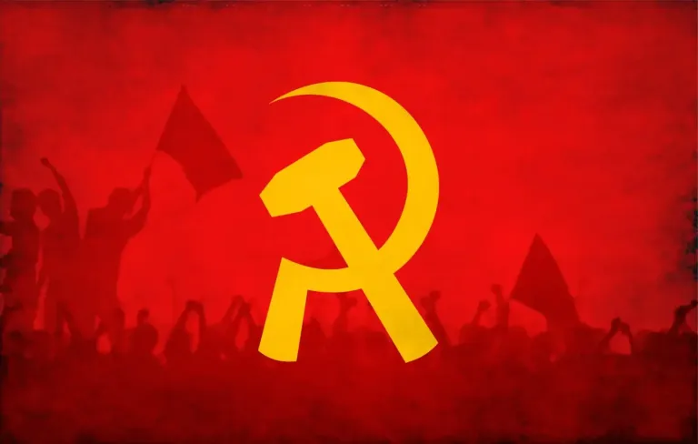

ما هي الاشتراكية
- الاشتراكية
- هي نظام فلسفي واقتصادي واجتماعي يهدف إلى ملكية المجتمع أو الدولة لوسائل الإنتاج (المصانع والأراضي والموارد) بدلاً من الملكية الخاصة، وتوزيع الثروة والموارد بشكل أكثر عدالة ومساواة بين أفراد المجتمع، مع التأكيد على التعاون والمصلحة الجماعية بدلاً من المنافسة الفردية، وغالباً ما يتم ذلك من خلال دور كبير للدولة في الاقتصاد لتصحيح الاختلالات وتحقيق الرفاهية للجميع.
- الشيوعية
- الشيوعية هي أيديولوجية وفلسفة سياسية واقتصادية تهدف إلى إقامة مجتمع لا طبقي يتم فيه امتلاك وسائل الإنتاج (مثل المصانع والأراضي) بشكل جماعي، وتوزيع الثروة بناءً على مبدأ "من كل حسب طاقته ولكل حسب حاجته" للقضاء على الفوارق الاجتماعية. هي مرحلة متقدمة من الاشتراكية، تسعى لإلغاء الملكية الخاصة والدولة تدريجياً لتصل إلى المساواة الكاملة، وتُعرف الماركسية بأنها التيار الرئيسي لها.
- الماركسية
- نظرية فلسفية واقتصادية واجتماعية وسياسية، أسسها كارل ماركس وفريدريك إنجلز، تقوم على تحليل نقد " الرأسمالية" و" الصراع الطبقي " باعتباره المحرك الأساسي للتاريخ، وتدعو إلى قيام مجتمع " لا طبقي " (الشيوعية) من خلال الثورة العمالية للقضاء على الاستغلال وتحقيق المساواة، معتمدة على " المادية التاريخية " و" الجدلية التاريخية " كأدوات لفهم تطور المجتمعات عبر مراحل تاريخية متتابعة.

جدول بأسماء أهم الشيوعيين والاشتراكيين ومناطقهم
| السوفيت | الاوروبيين | شرق اوسطيين | كوبيين |
|---|---|---|---|
| فلاديمير لينين | كارل ماركس | صدام حسين | فيدال كاسترو |
| تروتسكي ليون | فريدريك إنجلز | جمال عبدالناصر | تشي جيفارا |
يا شبـاب العرب هيـا وانطـلق يا موكبـي وارفـع الصوت قويـاً عاش بعــــث العـرب * * * * * * * * * نحــــــن فـلاح وعامــل وشـــبــاب لا يلـــين نحــــــن جنـدي مقــاتـل نحن صوت الكادحين من جذور الأرض جئنا مـن صميم الألـــــــم بالضحــــايـا ما بخلنـــا بالعطـــاء الأكــــــرم * * * * * * * * * خنــــدق الثوار واحـــد أو يقـال الظــلم زال صــامد يا بعــث صـامد أنت في ساح النضــال وحــــــد الأحـرار هيــا وحــــد الشعب العظـيم وامــض يا بعــث قويـاً للغـــد الحــــر الـكريــــم
نشيد صدام حسين الاشتراكي